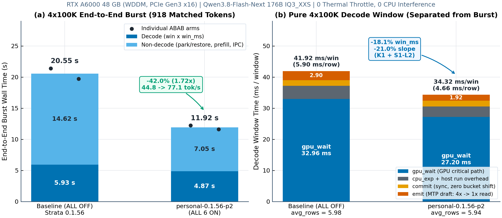
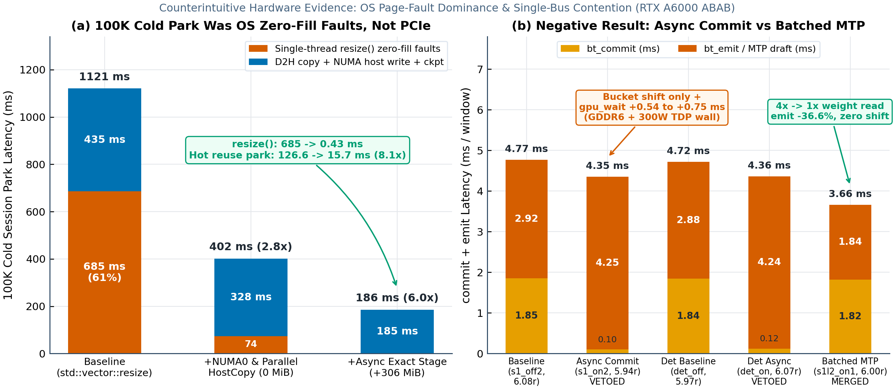
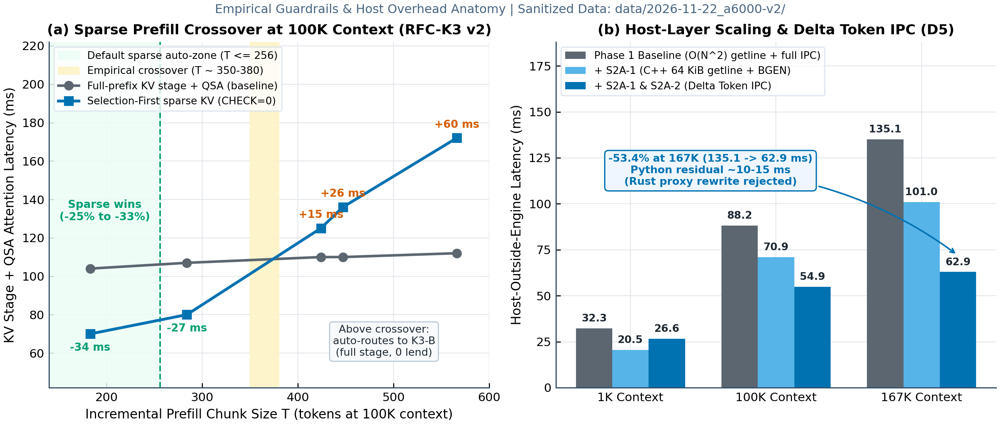

Serving a 176B Sparse MoE on a Single Workstation GPU: From a 16 GB RTX 5060 Ti to 1.72x Faster 4x100K on RTX A6000
First-principles hardware ceilings, CUDA kernel batching, Windows OS page faults, 6 upstream PRs, and why async commit actually made decode slower.
Most LLM inference optimization work targets datacenter clusters (vLLM, SGLang, multi-node TensorRT-LLM) or single-stream cold decode on CPU+GPU offload. My workload looks nothing like either: a personal agent workstation running a 176B-parameter sparse MoE (Qwen3.8-Flash-Next, IQ3_XXS, ~6B active parameters, 48 layers = 36 GDN + 12 QSA, 512 experts top-10, 262K context, INT8 KV, plus MTP speculative decoding) on a single GPU, spending 90% of its life on 100K–262K cached contexts, small incremental turns, frequent session parking/restoring, and 2–4 concurrent sub-agents.
Over October–November 2026, I studied this workload across two very different single-GPU tiers—first on an affordable 16 GiB RTX 5060 Ti + 64 GiB RAM desktop, then in a full first-principles kernel/runtime overhaul on a 48 GB RTX A6000 (sm_86, WDDM, PCIe Gen3 x16, dual EPYC 7542). Zero expert skipping, zero precision reduction, and every optimization gated by matched-sample ABAB benchmarks and bitwise/acceptance tests.
- Consumer tier (v0.1, RTX 5060 Ti 16 GiB + 64 GiB RAM, 259K near-full context): 176B MoE runs locally at 51.8–54.4 tok/s decode, proving that whole-call latency and decode-only tok/s pick opposite memory-residency winners (
172.9 s @ 51.8 tok/svs175.7 s @ 54.4 tok/s). - Workstation tier (v0.2, RTX A6000 48 GB, 4x100K concurrent agent burst, matched 918 completion tokens): End-to-end wall time dropped 20.55 s → 11.92 s (-42.0%, 1.72x, 44.8 → 77.1 tok/s).
- Pure 4x100K decode window (separated from burst): 41.92 → 34.32 ms/win (-18.1%), intercept-adjusted slope 5.90 → 4.66 ms/row (-21.0%), pushing effective VRAM bandwidth from ~47.5% to ~55–58% of the measured 713 GB/s ceiling with 0 MiB extra VRAM for QSA batching.
- Non-decode stages that secretly dominated wall time: 100K cold session park 1,056 → 185 ms (5.7x), hot reuse park 126.5 → 15.7 ms (8.1x), 100K incremental prefill (155 tok) 941 → 727 ms (-22.8%), 167K host-layer overhead 135.1 → 62.9 ms (-53.4%).

personal-0.1.56-p2 (ALL 6 ON) vs 0.1.56 baseline (ALL OFF) on RTX A6000 across matched 4x100K ABAB runs (identical per-lane output lengths [150, 256, 256, 256] = 918 tokens, 0 thermal throttle, 0 CPU interference). I always report end-to-end burst speedup (1.72x) separately from pure decode window speedup (-18.1%).1. The Two-Tier Insight: Why Consumer 16 GB and Workstation 48 GB Break Differently
Before touching CUDA kernels on the A6000, my v0.1 experiments on an i7-14700F + RTX 5060 Ti 16 GiB + 64 GiB RAM taught a foundational lesson: heterogeneous MoE serving is a memory-hierarchy co-design problem, not a single-metric decode race.
On 16 GiB VRAM with 39.97 GiB of MoE experts living in host RAM, you cannot cache everything on GPU. Comparing two layouts across five 259K-token cold calls:
- Full-RAM experts + growing KV (
grow): median decode 51.8 tok/s, TTFT 153.2 s, whole-call wall time 172.9 s. - Complement RAM residency + 64K physical KV (
stream64): median decode 54.4 tok/s (+5%), yet TTFT rose to 155.3 s and whole-call wall time worsened to 175.7 s due to host KV staging pressure.
On consumer hardware, decode-only tok/s literally chose the wrong architecture for real calls, and static expert pinning had to rank experts by hits per byte rather than raw frequency (implemented as a reproducible offline solver in moe_residency). Even a single unguarded snapshot admission or Windows file-mapping working-set spike during startup could silently trigger a full cold reload.
When I moved up to a 48 GB RTX A6000 (31 GiB VRAM expert cache holding 19,379 of 24,576 experts), the bottleneck flipped completely. Expert VRAM reads in 4-lane decode measured 0.98 ms/row—already near the physical byte floor. Yet 4x100K concurrent bursts still took 20.55 seconds. Why?
2. Measure the Hardware Walls First (and Fix the Ruler)
Instead of guessing flags, I measured the A6000 workstation's physical ceilings directly and classified every millisecond of latency as a physical wall, a conditional model wall, or engineering waste:
| Subsystem | Measured Physical Ceiling | Implications for Design |
|---|---|---|
RTX A6000 VRAM (sm_86, WDDM 597.30) |
713.0 GB/s sustained read (768 nominal) | CUDA P2 locks active memory clock at 7601 MHz even at 42°C; thermal throttling must be gated via NVML flags, not nominal clock. |
| GPU Compute & Power | 38.7 TFLOPS FP32 / 300 W TDP | 100K cold prefill (39.7 s, 2,425 tok/s) hits ~75% FP32 + 300 W power cap (physical wall). 4-lane decode also rides the 300 W cap. |
| PCIe Gen3 x16 (WDDM) | 12.57 GB/s H2D / 13.21 GB/s D2H | Measured bidirectional sum is 12.84 GB/s: no full-duplex overlap under WDDM. Async PCIe prefetch cannot hide transfers. |
| Host RAM (2x EPYC 7542, 256 GiB) | 120 GB/s NUMA0 (30T) / 19.8 GB/s (1T) | Single-threaded host copies or NUMA1 spillover instantly turn into multi-second stalls. |
I also hit two measurement traps that would have ruined any casual tuning pass:
- The speculative-row intercept trap: Decode windows obey
win_ms ≈ 6.64 + slope × avg_rows(where 6.64 ms is the fixed dense weight read). When MTP acceptance varies slightly between runs, rawwin_ms / avg_rowsor rawtok/slies. Every decode claim here uses exact matched-row pairs or intercept-adjusted slope(win_ms - 6.64) / avg_rows. - The profiling-stamp illusion: An earlier profiler view blamed 7.07 ms on solo QSA attention. Auditing the source showed
batch_rec_omitted timestamps 11/12, dumpingscores + topk + kv-resolve + attentioninto one bucket. Pure solo QSA attention was only 0.32–0.61 ms.
3. Six First-Principles Optimizations (and One Honest Negative Result)
3.1 Why 4-Lane Streamed-KV Decode Blew Up: RFC-K1 (-15.1% decode, 0 MiB VRAM)
Under --kv-resident 32768 (kv_mode=1, required to serve 4x100K contexts inside 48 GB VRAM), profiling exposed two silent fallbacks in batched decode:
QSA_sel_res_attndegraded 2.48x to 9.47 ms/win becausekv_mode=1bypassed theQSA_SLOTS/BATCH_ATTN_ROWSfast paths, andSTRATA_ATTN_DAILY=1forced a per-rowpre75_attn()fallback.batch_rec_disabledSTRATA_SIDE_MIXER=2, exposing 3.34 ms/win of unhidden side-stream work (vs 0.09 ms solo).
I implemented kv_mode=1 slot-group batching for scores + topk + resolve, wrote a multi-slot attn_chunk_slots_pre75_kernel compatible with STRATA_ATTN_DAILY=1, and re-enabled SIDE_MIXER=2 in batched windows. On a strictly matched 4x100K pair (win=135, avg_rows=5.44), QSA_sel_res_attn fell 9.47 → 2.96 ms (-68.7%), total win_ms dropped 39.05 → 33.17 ms (-15.1%), and the native qsa_slots_parity test passed 16/16 bitwise memcmp at 0 MiB extra VRAM.
3.2 The Negative Result That Changed My Design: RFC-S1-L1 (Vetoed) → RFC-S1-L2 (Merged)
Each decode window spent 1.82 ms in bt_commit and 2.90 ms in bt_emit. My first intuition (RFC-S1-L1) was textbook systems engineering: make commit_bm_ asynchronous and overlap 4 per-slot MTP draft streams concurrently.
bt_commit dropped from 1.85 → 0.10 ms on paper, yet bt_emit jumped 2.92 → 4.25 ms and gpu_wait regressed by +0.54 to +0.75 ms across every arm, with 300 W TDP cap hits rising (60→68, 60→66, 70→82). Net slope gain was <0.5% (noise floor). I vetoed and excluded RFC-S1-L1 from the release.
First-principles takeaway: When a single GPU is already saturated on its 713 GB/s GDDR6 bus and 300 W power ceiling, launching concurrent streams doesn't create bandwidth—it causes bus contention and WDDM queue tail spill. Auditing bt_emit showed 96% of its 2.90 ms was 4 serial calls to slot_mtp->draft() reading the MTP dense weights and 248,320-vocab lm_head four separate times per window.
So I flipped the design (RFC-S1-L2): keep commit strictly synchronous, and build 2-pass Multi-Slot Batched MTP (STRATA_BATCH_MTP_FUSED=1) to cut MTP + lm_head weight reads from 4x → 1x. Result on matched 6-row arms: emit fell 2.92 → 1.85 ms (-36.6%) with zero bucket shift into commit and zero tail spill into gpu_wait, for only 0.53 MiB staging memory.

std::vector::resize(), not PCIe transfer. (b) Making commit asynchronous only shifted work into emit and spilled +0.54–0.75 ms into gpu_wait; cutting 4x→1x MTP weight reads produced real, unshifted savings.3.3 100K Session Park Was an OS Page-Fault Bug, Not a PCIe Wall: RFC-S3B + RFC-S3A (5.7x–8.1x)
When switching between 100K agent sessions, cold parking took 1,056–1,121 ms. Everyone assumed PCIe Gen3 x16 was the culprit. Tracing with STRATA_PARK_TRACE=1 showed the opposite: 685–703 ms (61–81%) was single-threaded std::vector::resize() triggering Windows 4 KiB demand-zero page faults. Worse, parking a 14th 100K session exhausted NUMA0, spilling onto NUMA1 and doubling resize() to 1,694 ms. And enabling async park previously allocated ~1,600 MiB of VRAM staging because kv_need sized against full logical KV rather than device-resident bytes (a 9x over-allocation under kv_mode != 0).
Fixing all four layers together—VirtualAllocExNuma(0) affinity (verified on_node=256 off_node=0), resize_for_overwrite, a persistent parallel HostCopyPool, exact device-resident VRAM staging, and TTL expiry on the retained reuse_ buffer (RFC-S3A)—dropped resize from 701 → 0.28–0.52 ms, cold park 1,056 → 185 ms (5.7x), hot reuse park 126.5 → 15.7 ms (8.1x), hot restore 295 → 184–238 ms, and reclaimed ~1.3 GiB of VRAM (async stage down from ~1,600 to 306 MiB), with 596-char post-restore SHA-256 byte-exact parity.
3.4 Empirical Sparse-Prefill Crossover & Host IPC: RFC-K3 v2 and RFC-S2A-1/2
Small incremental agent turns (130–600 new tokens appended to a 100K cached prompt) suffered two hidden penalties: full-prefix KV staging (~98 ms constant regardless of how few pages attention needed) and lending/refilling 391–473 VRAM expert cache slots (~56–68 ms) on every turn.
I built Selection-First sparse prefill KV (RFC-K3-A) paired with a dedicated small-chunk workspace (RFC-K3-B, ≤768 tok, 0 slots lent). Measuring the clean CHECK=0 curve (after stripping 480 debug stream syncs) exposed an exact physical crossover at T ≈ 350–380 tokens: sparse sub-batches launch only 15 × 2 = 30 CTAs across 84 SMs (35.7% SM occupancy), so sparse wins decisively below 256 tokens (941 → 727 ms, -22.8% at 155 tok) and loses above 380 tokens. Setting the auto-guard at SPARSE_MAX_T=256 gives sparse gains on small turns and seamlessly routes 257–768 tok through K3-B with zero cache borrowing.
Finally, on the host layer (167K context took 135.1 ms outside the engine), profiling killed two popular myths immediately: Jinja templating was only 1.28 ms and warm BPE tokenization was 2.90 ms. Over 84% of the scaling cost came from Python ','.join ASCII serialization plus an O(N2) newline rescan inside C++ getline_fd. Fixing getline_fd with a 64 KiB buffered reader + zero-copy BGEN/std::from_chars (RFC-S2A-1) and adding CRC32+Adler32 text delta token IPC with automatic REF_MISS full fallback (RFC-S2A-2) cut 167K host overhead to 62.9 ms (-53.4%). Because the remaining Python proxy overhead was only ~10–15 ms, I rejected rewriting the HTTP proxy in Rust.

CHECK=0 empirical crossover for Selection-First sparse prefill at 100K context (T ≈ 350–380 tok); defaulting to T ≤ 256 captures the -25% to -33% win while routing larger chunks to K3-B zero-borrow staging. (b) Eliminating C++ O(N2) getline_fd scanning and adding delta token IPC cut 167K host latency by 53.4%, proving a Rust proxy rewrite was unnecessary.4. Upstream Contributions & Reproducible Artifacts
Rather than leaving these fixes trapped in a private fork, I ported all six clean engine optimizations onto upstream Niko1221/Strata main (v0.2.18 / engine 0.1.64), compiled and unit-tested every PR natively on RTX A6000, and opened six evidence-backed pull requests:
| PR | State | Scope & Evidence |
|---|---|---|
| #6543 | Ready | Guard 7 negative page_table entries in qsa_prompt_attn + monotonic kv_stream overflow_count (kv_stream_parity 4 formats PASS). |
| #6544 | Ready | Fix O(N2) scan in getline_fd + zero-copy BGEN / std::from_chars (-20.3% at 167K host layer). |
| #6545 | Ready | Fix 9x STRATA_PARK_ASYNC VRAM over-allocation under kv_mode != 0 (~1,600 → 306 MiB). |
| #6546 | Ready | Opt-in resize_for_overwrite + parallel HostCopyPool for kv_mode != 0 park/restore (5.7x–8.1x park speedup). |
| #6547 | Draft | Opt-in Multi-Slot Batched MTP (STRATA_BATCH_MTP_FUSED; 4x→1x weight reads, emit -36.6%). |
| #6548 | Draft | Opt-in streamed-KV QSA slot-group batching, pre75 multi-slot kernel, and batch SIDE_MIXER (16/16 bitwise parity, 0 MiB VRAM). |
5. Honest Falsified List & Scope Limitations
Recording what did not work saved just as much time as what did:
- Standalone
STRATA_BATCH_COMMIT_ASYNC=1(RFC-S1-L1): Vetoed due to GDDR6 + 300 W TDP bus contention and WDDM tail spill. STRATA_KV_PREFETCH=1: Zero gain under WDDM PCIe Gen3 x16 (no full-duplex overlap).- Cross-layer persistent Megakernel on
sm_86: 6 MB L2 and 8.3 MB total shared memory across 84 SMs cannot keep multi-gigabyte HBM MoE weights resident on-chip. - Solo
STRATA_QSA_SPLIT_ATTN=1(-0.07 ms, below noise), Jinja caching (1.28 ms total), and Rust HTTP proxy rewrite (~10–15 ms Python residual).
Explicit boundaries I want readers to know up front:
- All v0.2 full-stack benchmarks were measured on one workstation GPU (RTX A6000 48 GB, Windows WDDM, PCIe Gen3 x16), one model (
Qwen3.8-Flash-Next IQ3_XXS), and one engine baseline (Strata 0.1.56). Cross-engine comparisons againstllama.cpp/KTransformersand Linux measurements remain future work. - The 16 GiB RTX 5060 Ti numbers (
51.8–54.4 tok/s) are from my v0.1 Oct–Nov 4 baseline study, not re-run with the v0.2 A6000 patches. - For v0.2, numerical integrity was verified via kernel/continuation bitwise parity (
qsa_slots_parity16/16memcmp, 100K park→restore 596-char SHA-256, 100K WDDM 575/596-char byte-exact,res4096 ovf=0) plus 10/10 functional acceptance (262K, vision, 3 protocols, tool calling, 4-way concurrency), rather than re-running the full 24,574-line teacher-forcing harness from v0.1. - With all six optimizations active on A6000, minimum free VRAM stays at 4,703–4,723 MiB (well above my 2,048 MiB floor). Three operational guardrails remain mandatory: keep
STRATA_BATCH_MTP_ATTN_SLOTSunset (enforcing its ≤32 MiB auto-guard), keepSTRATA_PREFILL_SPARSE_CHECK=0in steady state, and never enableSTRATA_BATCH_COMMIT_ASYNC=1.